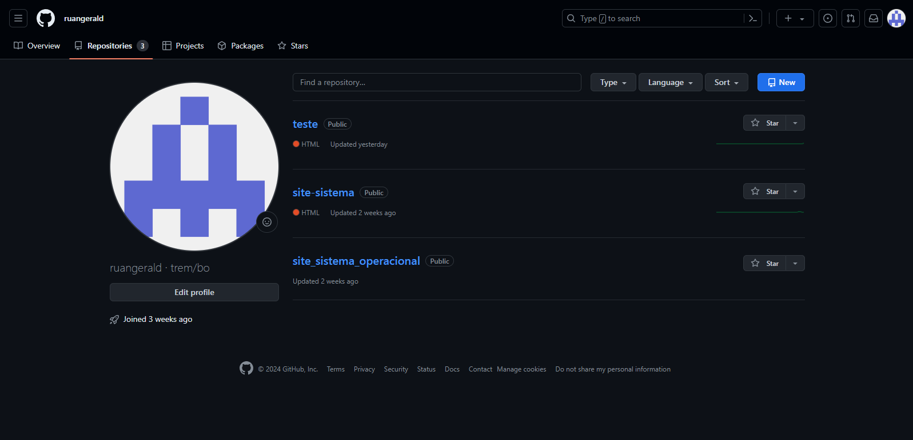
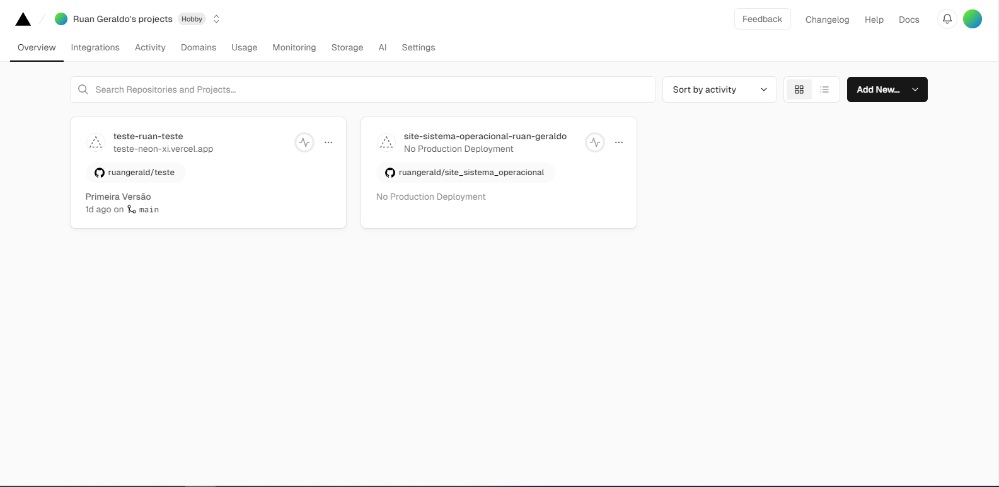

O que é um Repositório
Um repositório tem recursos que permitem que os desenvolvedores rastreiem facilmente as alterações de código, editem arquivos simultaneamente e colaborem com eficiência no mesmo projeto em qualquer local.
O que é um Deploy
Deploy consiste no processo de colocar no ar uma aplicação já concluída. Ele pode ocorrer durante várias fases do projeto, bem como após a sua conclusão. Além disso, pode haver modificações no código e outras atualizações necessárias, como uma função no aplicativo ou website que ainda não existia.
